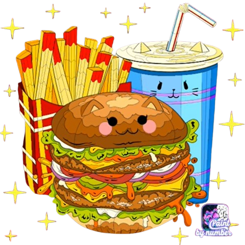
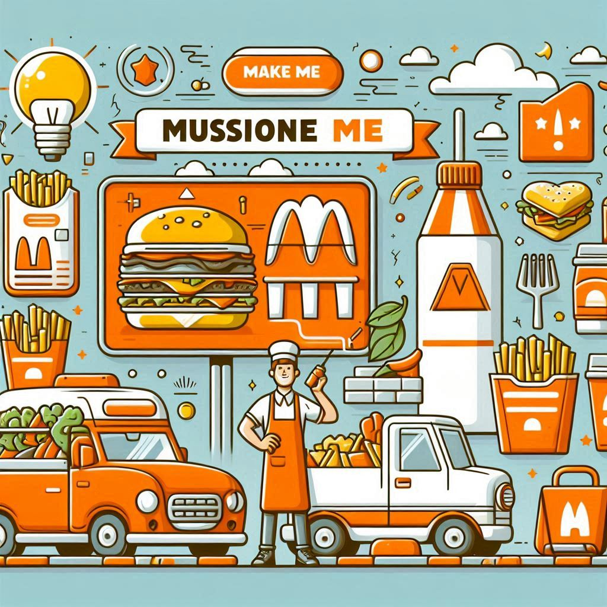
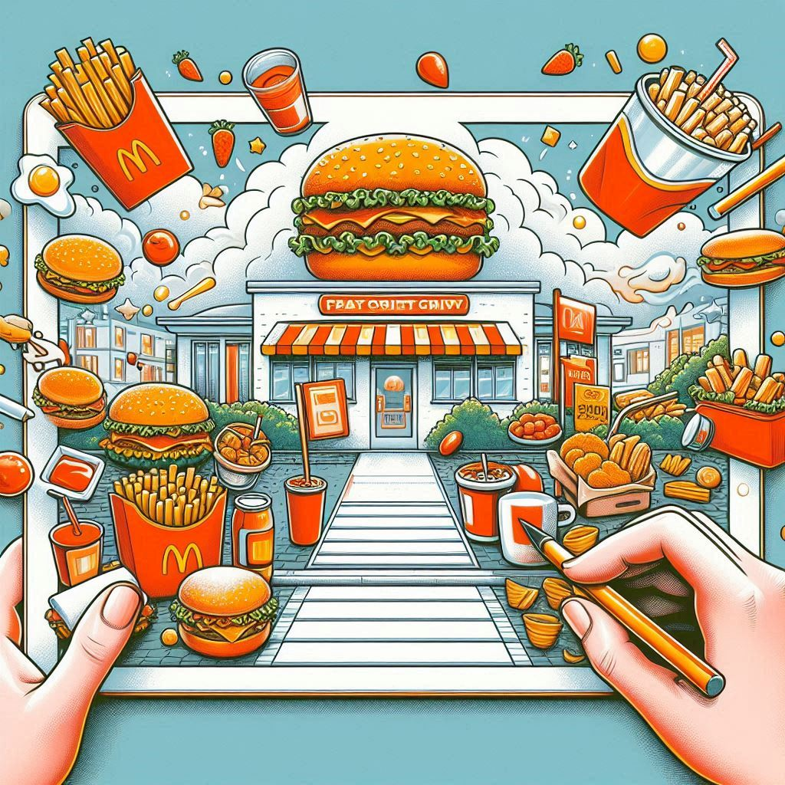

Desde el momento en que descubrimos la pasión por la comida rápida, nos convertimos en verdaderos amantes de esta gastronomía por ello fundamos nuestro primer restaurante para ofrecer platos que no solo sean rápidos, sino que también conquisten el paladar de nuestros clientes.
Desde 2015, hemos venido perfeccionado nuestras recetas, combinando ingredientes frescos y de alta calidad con un buen servicio que nos caracteriza.
Somos una empresa dedicada a la elaboración de comida rápida, ofreciendo un menú variado y delicioso, que, con base en la calidad y servicio, brinde a que nuestros clientes se alimenten de la mejor manera posible en la comodidad de nuestros espacios. Nuestro objetivo es complacer el paladar de nuestros clientes y que se sientan satisfechos y a gusto con nuestros alimentos.
Ser una empresa líder en el servicio de comida rápida a nivel nacional, manteniendo siempre una buena calidad para servir a nuestros clientes, cuidando el gusto y el placer gastronómico de quienes visitan nuestras instalaciones.
